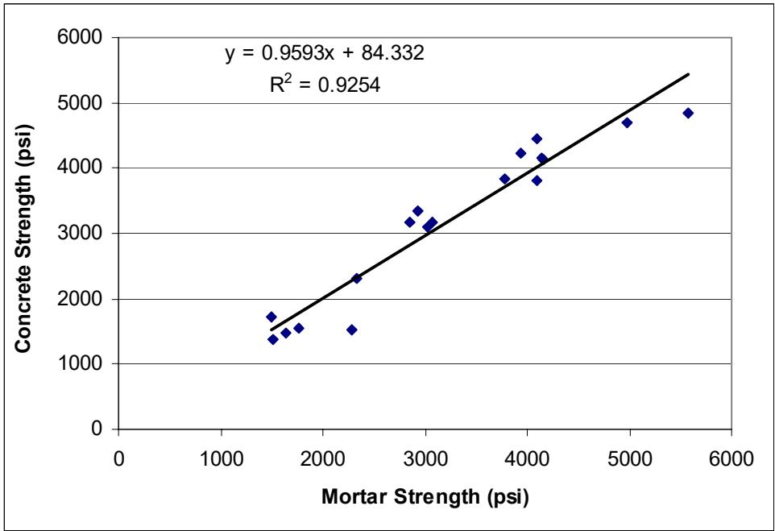
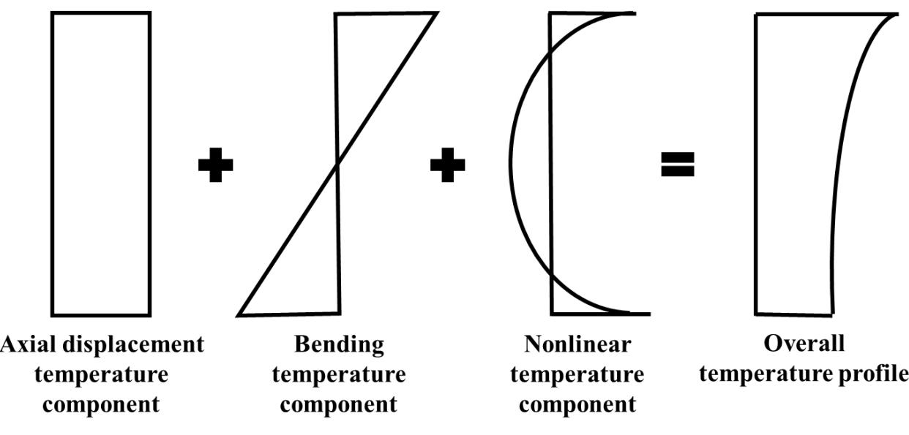
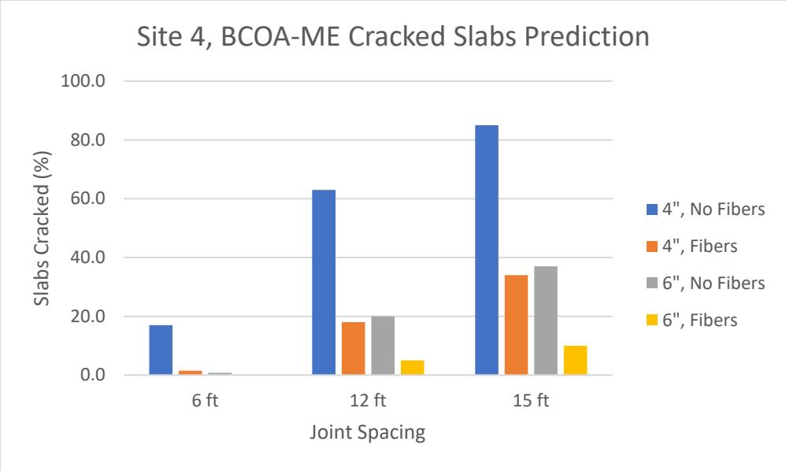
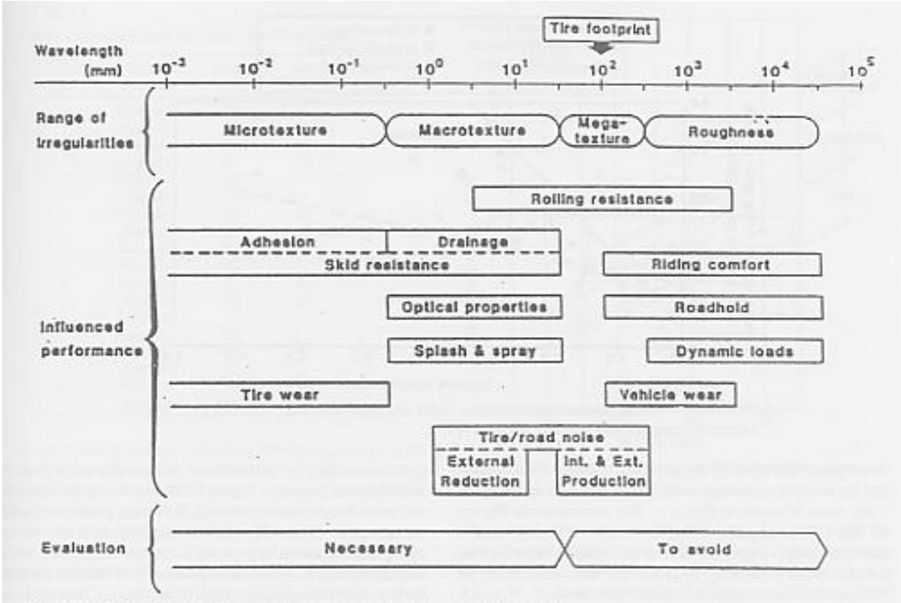

Early-Age Behavior, Curing & Distress
Early-age behavior, curing, and distress represent a category of concrete performance issues driven by the complex interplay between material rheology, moisture dynamics, and thermal behavior during the transition from plastic to hardened states. Concrete curing is the essential process of maintaining adequate moisture and temperature within freshly placed cementitious materials to facilitate hydraulic hydration and pozzolanic reactions, thereby allowing the concrete’s potential properties to fully develop [1]. The performance of cementitious systems is highly sensitive to environmental temperatures, requiring adjusted construction practices to manage strength development and thermal cracking risks effectively [1]. Internal curing serves as a critical maintenance technique that involves incorporating internal water reservoirs to supply moisture directly to the cement paste during hydration, mitigating early-age shrinkage and enhancing durability [2] [3]. Early-age distress mechanisms such as curling, warping, and cracking are fundamentally governed by non-uniform temperature or moisture gradients through the slab thickness, which induce tensile stresses that can exceed the material’s strength [4] [3].
CP Tech Center reports covering “Early-Age Behavior, Curing & Distress” also include the following subtopics: Concrete Curing, Curling and Warping, and Shrinkage & Early-Age Cracking.
Early-Age Behavior, Curing & Distress addresses the critical period when fresh concrete transitions to a hardened state under environmental stress. Concrete Curing actively manages moisture and thermal conditions during this transition to prevent distress mechanisms such as plastic shrinkage cracking and ensure optimal strength development. Shrinkage & Early-Age Cracking manifests as the critical volume reduction and fissure formation resulting from capillary pressure, plastic moisture loss, and drying contraction that define the transition from plastic to hardened concrete states. Curling and Warping manifests as out-of-plane bending deformations driven by non-uniform temperature or moisture gradients through the slab thickness, directly linking early-age environmental conditions to structural distress.
Sources (16)
Sub-concepts (3)
Key findings
- Internal curing using lightweight fine aggregate or superabsorbent polymers mitigated autogenous shrinkage and curling/warping distress by supplying internal water reservoirs, though it introduced trade-offs such as increased initial construction costs or reduced compressive strength [5] [2] [3].
- Early-age smoothness fluctuations were driven by diurnal temperature gradients and irreversible shrinkage, causing measured IRI values to shift pavement grades even when statistical differences between paving times were negligible [4] [6].
- Fiber reinforcement did not significantly alter the rate or extent of joint activation in overlays but effectively mitigated reflective cracking by controlling crack widths without impacting the stress required for initial cracking [7] [8].
- Supplementary cementitious materials reduced the maximum heat of hydration and thermal cracking risk but altered maturity characteristics, requiring adjusted time-temperature factor correlations to prevent premature traffic opening [1].
- Joint spacing was the predominant factor governing early-age joint activation rates in overlays, with longer spacings leading to faster activation due to increased shrinkage and curling stresses scaling with slab length relative to stiffness [7].
- Widened concrete pavements experienced longitudinal cracking driven by high width-to-thickness ratios and inadequate joint precision, where tied Portland cement concrete shoulders performed substantially better than asphalt or granular alternatives [9].
- Traditional prescriptive specifications based on strength and slump showed limited correlation with long-term durability, necessitating a shift toward performance-engineered mixtures assessed via rapid tests for shrinkage potential and transport resistance [10].
- Standard finite element models could not fully capture early-age slab distortion without converting environmental effects into an equivalent temperature difference, which included both transient thermal gradients and permanent unrecoverable shrinkage components [6].
Mixture Design and Curing Strategies
Evidence: 8 reports (7 primary)
Mixture design for early-age performance shifts from prescriptive metrics to a performance-based approach that optimizes durability properties such as transport resistance and shrinkage potential [10]. Internal curing technologies mitigate autogenous shrinkage by incorporating internal water reservoirs, such as saturated lightweight aggregates or superabsorbent polymers, to sustain hydration in low water-to-cementitious ratio systems [5] [1] [2] [3] [11]. Effective management of early-age thermal behavior and strength development relies on monitoring concrete maturity through time-temperature factors to predict when the material has achieved sufficient structural capacity [1].
The figure below illustrates how drying shrinkage and autogenous strain evolve relative to concrete age in both conventional and high-performance mixes following internal curing.
 Drying shrinkage and autogenous versus concrete age in conventional concrete (left) and high-performance concrete (right) after internal curing [2]
Drying shrinkage and autogenous versus concrete age in conventional concrete (left) and high-performance concrete (right) after internal curing [2]
The figure displays two graphs plotting cumulative shrinkage against concrete age, comparing the behavior of conventional concrete on the left with high-performance concrete on the right. In both scenarios, total shrinkage is decomposed into autogenous shrinkage and drying shrinkage, which occurs after the start of drying.
Research problem — Traditional concrete specifications relying on fresh-state properties often fail to predict durability-related distresses, necessitating a shift toward evaluating hardened material characteristics and mixture proportioning to address underlying causes of early-age failure [10]. The integration of supplementary cementitious materials and internal curing agents introduces complex hydration kinetics that challenge standard maturity models and construction schedules, requiring accurate prediction of strength development under varying thermal regimes to prevent premature loading or distress [1] [3] [12]. Optimizing internal curing strategies using lightweight aggregates or superabsorbent polymers involves balancing the mitigation of autogenous shrinkage and permeability against potential reductions in mechanical strength and the lack of standardized testing protocols for these additives [5] [2] [11].
The following figure illustrates how curing temperature influences the relationship between mortar and concrete strength.

Relationship between mortar and concrete strength (cured at 1 0 ° C ) [1]The figure displays a scatter plot with Mortar Strength on the x-axis and Concrete Strength on the y-axis, showing data points that follow a strong linear trend.
State of the art — The industry is transitioning from prescriptive specifications based on strength and slump toward Performance-Engineered Mixtures that correlate early-age properties with long-term durability, although current standards primarily address mixture design up to the point of leaving the plant [10]. Predictive modeling tools like HIPERPAV are now standard for managing the complex interplay between material composition and environmental conditions, with best practices emphasizing field-specific strength-maturity correlations rather than generic standards to determine traffic opening times [1]. Internal curing using prewetted lightweight fine aggregate or superabsorbent polymers is increasingly adopted to mitigate autogenous shrinkage and reduce early-age cracking, with specific standards defining material requirements for these agents [5] [13] [2].
Findings from the reports
- Traditional strength-based specifications showed limited correlation with long-term durability and distress mechanisms, prompting a shift toward performance-engineered mixtures that prioritize early-age properties like shrinkage potential and transport resistance [10].
- Supplementary cementitious materials reduced the maximum heat of hydration and thermal cracking risk but slowed strength development, requiring adjusted curing protocols to avoid premature loading risks in cold weather [1].
- Standard time-temperature factor calculations using a datum temperature of -10°C overestimated the required strength-time relationship for concrete with supplementary cementitious materials, which exhibited higher datum temperatures and ceased strength gain at warmer temperatures [1].
- Cool-weather paving exacerbated cracking risks in overlays due to temperature differentials between the existing pavement and fresh mix, necessitating minimum overlay temperatures and careful timing of sawing for thinner sections [13].
- Internal curing using prewetted lightweight fine aggregate reduced autogenous and plastic shrinkage cracking while maintaining mechanical properties by supplying water from within the matrix without increasing the effective water-to-cementitious ratio [5].
- Internally cured concrete mitigated slab warping and curling by reducing internal temperature and moisture differentials, resulting in significantly less movement compared to control slabs and extended predicted service life [3].
- Internal curing enabled a reduction in pavement slab thickness while maintaining equivalent performance limits, leading to lower net present values over the analysis period despite slightly higher initial construction costs per unit volume [11].
- Superabsorbent polymers reduced plastic and drying shrinkage strains by acting as internal water reservoirs, but this benefit was counterbalanced by decreased compressive strength and resistivity due to residual pores formed after water desorption [2].
- The efficacy of superabsorbent polymers depended on balancing absorption kinetics and particle size to ensure timely water release, with inconsistent control over this process posing a significant challenge for performance optimization [2].
Novelty & rigor — Research has shifted specification frameworks from traditional prescriptive metrics to performance-engineered criteria that directly correlate early-age mixture properties, such as shrinkage potential and air-void systems, with long-term field distress risks [10]. Novel internal curing strategies utilizing superabsorbent polymers offer a distinct mechanism for mitigating autogenous shrinkage through controlled water release kinetics, addressing logistical challenges associated with pre-saturated lightweight aggregates [2]. Reproduction of these advanced mixture designs requires rigorous adherence to specific material characterization protocols and standardized testing methods that capture the complex interplay between thermal gradients, moisture dynamics, and rheological behavior during early hydration [10] [2].
Reported values
| Parameter | Value | Context | Source |
|---|---|---|---|
| minimum overlay mix temperature | 65°F | overlay mix for mitigating set-time issue in cool weather | [13] |
| cold weather curing temperature | 50°F | concrete curing conditions | [1] |
| concrete strength at traffic opening | 3000 psi | binary/ternary cements after 8 days | [1] |
| datum temperature | -10°C | commonly assumed value for binary/ternary cements | [1] |
| normal weather condition temperature | 70°F | strength-TTF correlation development | [1] |
| time to traffic opening | 8 days | pavement opened to traffic with binary/ternary cements | [1] |
| compressive strength reduction | 8% | SAP-containing concrete compared to control mixture at 28 and 56 days | [2] |
| maximum movement | 0.9 mm | internally cured (IC) section during Winter in the morning in Washington County | [3] |
| maximum movement | 2.2 mm | control (CC) section during Winter in the morning in Washington County | [3] |
| rehabilitation interval | 20 years | conventional mixtures | [3] |
| rehabilitation interval | 27 years | internally cured (IC) mixtures | [3] |
| minimum concrete thickness | 10 in. | IC concrete (baseline) | [11] |
| minimum concrete thickness | 7 in. | internal curing application | [11] |
| minimum concrete thickness | 8 in. | IC concrete (baseline) | [11] |
| minimum concrete thickness | 9 in. | internal curing application | [11] |
2 more distinct values omitted here; the full span-verified set is in the quantities sidecar.
Across the reviewed reports, mixture design strategies utilizing supplementary cementitious materials (SCMs) or internal curing agents fundamentally alter early-age thermal and moisture dynamics to mitigate cracking risks, yet these benefits are counterbalanced by altered strength development rates and potential reductions in hardened property performance. While SCMs reduce maximum heat of hydration to lower thermal cracking risk, they slow strength gain and require adjusted curing protocols due to higher datum temperatures that invalidate standard time-temperature factor calculations, whereas internal curing using lightweight aggregates or superabsorbent polymers reduces shrinkage but can decrease compressive strength and resistivity. Effective implementation of these strategies requires precise management of environmental conditions and material properties, as cooler weather exacerbates delays in SCM-based mixes and inconsistent water desorption from internal curing agents poses significant challenges for performance optimization. [1] [2]
Implications — Specifiers should transition from prescriptive limits to performance-engineered mixtures that link early-age transport and shrinkage properties directly to long-term durability, while carefully managing the trade-off between reduced cement content and increased cracking risk [10]. Curing protocols for blended cements must be dynamic and site-specific rather than relying on fixed calendar dates or generic maturity assumptions, as standard datum temperatures can lead to inaccurate strength estimates and premature traffic opening in cold weather [1]. Internal curing strategies using lightweight aggregates or superabsorbent polymers require rigorous quality control of material preconditioning and dosage to balance the benefits of reduced shrinkage against potential losses in mechanical strength and logistical complexity [5] [2] [3].
The following figure illustrates how variations in curing temperature directly influence the initial set time of concrete.
 Effects of curing temperature on initial set time of concrete [1]
Effects of curing temperature on initial set time of concrete [1]
The figure plots the initial setting time against varying curing temperatures for three different cementitious mixtures.
Limitations — Standard testing protocols fail to capture early-age volume changes within the first twenty-four hours and do not account for restraint effects on cracking potential [10]. Maturity methods using fixed datum temperatures are inadequate for blended cements, creating risks of premature loading in cold weather when standard correlations are applied without adjustment [1]. Internal curing technologies face logistical supply chain challenges and lack standardized specifications for additives like superabsorbent polymers, while their adoption requires rigorous quality control to balance shrinkage mitigation against potential reductions in mechanical durability [13] [2] [3].
Distress Mechanisms: Curling, Warping, and Cracking
Evidence: 6 reports (4 primary)
Curling and warping are distinct out-of-plane bending deformations of concrete pavement slabs driven by non-uniform temperature or moisture gradients through the slab thickness [14] [4]. Curling is specifically induced by thermal gradients, while warping results from moisture gradients, causing the slab to bend upward or downward depending on whether the top or bottom surface experiences higher expansion due to heat or moisture content [14] [6]. These behaviors are further complicated by irreversible factors like drying shrinkage and creep, which contribute to permanent curvature changes that affect initial pavement smoothness and long-term performance [6]. The resulting curvature significantly impacts pavement smoothness, ride quality, and long-term structural performance by inducing tensile stresses that can lead to various forms of cracking under traffic loading [14] [9].
The following figure illustrates the typical temperature variation profile throughout a slab that drives these curling deformations.

Decomposition of a typical temperature variation profile throughout a concrete slab into axial, bending, and nonlinear components. [14]The figure illustrates the decomposition of an overall temperature profile through a slab thickness into three distinct additive components: an axial displacement component, a linear bending component, and a curved nonlinear component. This breakdown represents the “total nonlinear temperature profile” used in mechanistic pavement design to account for thermal effects on slab curvature.
Research problem — Current mechanistic models fail to accurately simulate early-age slab deformation caused by moisture variations and permanent strain at zero temperature difference, limiting the ability to predict curvature-driven distress [6]. There is a critical lack of standardized field measurement techniques capable of isolating environmental curvature effects from longitudinal slope, which hinders the assessment of how early-age distortions impact ride quality and service life [14]. The industry lacks a robust methodology to link transient early-age temperature and moisture dynamics during curing directly to long-term performance metrics, necessitating approaches that do not rely on extensive observation periods [15].
State of the art — The field has transitioned from static empirical methods to mechanistic-empirical frameworks that utilize finite element analysis and chronological simulations to model the dynamic interplay of thermal gradients, moisture loss, and shrinkage during early-age hardening [9] [6] [12]. Current consensus identifies slab geometry and interface conditions as critical drivers of distress, with skewed joints increasing curling stresses and unbonded layers inducing significantly higher deflections compared to bonded configurations [9] [12]. While tools like EverFE 2.24 and the Enhanced Integrated Climate Model enable detailed simulation of permanent curling and warping, accurately predicting initial smoothness remains challenging due to insufficient understanding of how specific environmental conditions during construction affect early-age slab distortion [14] [6].
The following figure illustrates the three consecutive slab systems in each lane that were utilized in the finite element simulations.
 Three consecutive slab systems in each lane used in FE simulation [6]
Three consecutive slab systems in each lane used in FE simulation [6]
The figure displays a schematic of a concrete pavement layout divided into two distinct lanes labeled “Passing lane” and “Traveling lane.” Vertical dashed lines indicate joints separating the slabs, while horizontal tick marks along the centerline represent joint ties. This configuration represents a finite element simulation model used to analyze early-age behavior and slab deformation in rigid pavements.
Findings from the reports
- Demonstrated that tied Portland cement concrete shoulders performed substantially better than hot mix asphalt or granular alternatives in mitigating moderate- to high-severity cracking [14] [9].
- Evaluated diurnal cycles of slab curvature driven by temperature gradients, showing that upward curling peaked in the early morning and downward curling occurred around noon, directly impacting ride quality metrics [4] [6].
- Revealed that measurable changes in pavement smoothness occurred over time due to environmental effects, with International Roughness Index values fluctuating significantly during the first few days of curing [4] [6].
- Found that longitudinal cracking in widened concrete pavements was driven by a complex interplay of early-age thermal and moisture gradients, jointing geometry, and construction quality rather than solely traffic loads [9].
- Measured high negative temperature gradients between the top and bottom of slabs that generated significant top-to-bottom tensile stress ratios, which combined with mechanical loads to drive crack initiation near mid-slab areas [9].
- Observed that skewed joints increased curling and warping stresses compared to rectangular ones, exacerbating early-age distress in widened traffic lanes [9].
- Established that early-age smoothness changes were influenced by a complex interplay of temperature gradients, moisture variations, drying shrinkage, and slab creep during the critical period immediately following construction [6].
- Found that permanent curling and warping behaviors at early ages were influenced not only by temperature variation but also by moisture variation and drying shrinkage, challenging assumptions that initial construction quality alone dictates performance [6].
- Identified that the shrinkage equivalent temperature difference had a more significant effect on curling and warping behavior than the hourly equivalent temperature difference [14].
- Confirmed that Quality Management Concrete mix designs, rectangular slab geometries, and tied PCC shoulders significantly reduced curling and warping distresses compared to other construction alternatives [14].
Novelty & rigor — Research has identified a novel distress mechanism in widened concrete pavements where skewed joint geometry interacts with thermal-moisture gradients to initiate longitudinal cracking, challenging standard assumptions that focus solely on general volume changes or rectangular configurations [9]. Methodological innovation is demonstrated through the development of computational algorithms that isolate curvature-related roughness from general distress and the introduction of an equivalent temperature difference framework to quantify permanent shrinkage effects in finite element models [14] [6]. Reproducibility is established via rigorous Early, Frequent, and Detailed monitoring protocols that synchronize high-frequency environmental instrumentation with multi-modal pavement profiling to capture the dynamic interplay of diurnal curling, warping, and smoothness degradation [4] [6].
Reported values
| Parameter | Value | Context | Source |
|---|---|---|---|
| effective permanent curling/warping temperature difference | -10°F | default value for PMED | [14] |
| total equivalent temperature difference | 0°F | near which curling/warping indicators (curvature IRI, deflection, and deflection ratio) reached zero | [14] |
| distance from slab edge | 2 to 4 ft | widened traffic lane longitudinal cracking location | [9] |
| top-to-bottom tensile stress ratio | 5.8 | mid-slab area under combined mechanical and temperature load | [9] |
| IRI | 70.7 in./mi | minimum IRI value at Platteville site during morning paving | [6] |
| IRI | 83.0 in./mi | maximum IRI value at Platteville site during morning paving | [6] |
| p-value | > 0.05 | measured smoothness indices with respect to measurement times (morning vs. afternoon) | [6] |
Across the reviewed reports, early-age distress mechanisms such as curling, warping, and cracking are collectively driven by a complex interplay of thermal gradients, moisture dynamics, and drying shrinkage that generate significant tensile stresses during the transition from plastic to hardened states. While environmental loading causes measurable fluctuations in pavement smoothness and slab curvature over time, prediction models struggle to accurately forecast these behaviors due to the lack of a single dominant factor influencing all distress indicators. Construction practices significantly mitigate these distresses, with tied Portland cement concrete shoulders and rectangular slab geometries consistently outperforming asphalt or granular alternatives in reducing cracking severity and curling potential. [14] [9] [6]
The following figure illustrates the performance of multiple linear regression models in predicting these distress indicators for non-LTPP sections.
 Scatter plot comparing predicted versus measured curvature degree for non-LTPP sections. [14]
Scatter plot comparing predicted versus measured curvature degree for non-LTPP sections. [14]
The figure displays a scatter plot of blue data points representing the relationship between measured and predicted curvature degrees, with a red line indicating a linear fit.
Implications — Designers must treat the width-to-thickness ratio as a critical parameter for preventing distress, ensuring that widened slabs receive proportional thickness increases to mitigate elevated tensile stresses from curling and warping [9]. Construction practices should prioritize geometric choices like rectangular joints and tied concrete shoulders over skewed configurations or granular bases to mechanically restrain early-age stresses and reduce longitudinal cracking potential [9]. Quality control protocols must shift toward frequent, high-resolution monitoring of diurnal slab curvature during the initial curing phase, as transient thermal and moisture gradients can cause irreversible deformations that permanently degrade smoothness specifications [4] [6]. Prediction models should be refined to account for the synergistic effects of environmental gradients and construction timing, moving beyond simple temperature-based assumptions to capture complex stress interactions in widened panels [14] [9].
The following figure illustrates the predictive performance of multiple linear regression models for key distress indicators on county roads and city streets.
 Multiple linear regression model’s prediction results for county roads and city streets: (a) curvature IRI, (b) deflection, (c) deflection ratio, (d) degree of curvature [14]
Multiple linear regression model’s prediction results for county roads and city streets: (a) curvature IRI, (b) deflection, (c) deflection ratio, (d) degree of curvature [14]
The figure displays a scatter plot comparing predicted versus measured values for the degree of curvature in concrete pavements. A red line represents perfect agreement, while blue data points indicate that the model’s predictions are generally lower than the actual measurements. The plot includes a coefficient of determination (R²) value to quantify the correlation between the predicted and observed curvature behavior.
Limitations — Standard mechanistic models and finite element simulations often fail to capture the full distribution of crack initiation times or directly model permanent deformations, relying instead on equivalent parameters that introduce uncertainty in tensile stress calculations [9] [6]. The inability to isolate specific environmental factors due to high correlation and the lack of standardized measurement protocols obscure the true impact of early-age texturing and curing on long-term performance [14] [15]. Field data collection is constrained by logistical challenges, such as instrumentation speed and safety restrictions, which limit the capture of complete diurnal profiles and maximum curling variations associated with nighttime conditions [14] [4] [6].
Reinforcement and Jointing Strategies
Evidence: 3 reports (3 primary)
Joint activation in concrete pavements is primarily driven by the accumulation of shrinkage and curling stresses, which increase significantly as joint spacing expands due to greater restraint against slab movement [7]. The magnitude of these thermal and shrinkage-induced stresses is fundamentally governed by geometric parameters, specifically the ratio of slab length to the radius of relative stiffness, which serves as a critical indicator for predicting when joints will open [7]. Fiber-reinforced concrete consists of a mixture reinforced with discrete fibers that bridge developing cracks to carry tensile stresses and absorb energy, thereby providing residual strength and enhancing post-crack load-carrying capacity [8]. The primary design goals for incorporating fibers into concrete overlays are to enhance fatigue performance through added residual strength and to improve long-term durability by keeping cracks tight, which aids in cracking resistance and slows the infiltration of water and incompressible materials [8].
Research problem — Standard jointing and curing practices often fail to mitigate early-age transverse cracking in concrete overlays, creating a need for optimized design strategies that balance timely stress relief against the risks of random mid-panel cracking and compromised ride quality [7]. Existing design models frequently underestimate cracking severity and overlook material-specific crack control mechanisms, necessitating improved prediction methods that accurately account for the mitigating role of reinforcement in maintaining structural integrity during early-age transitions [8]. There is a critical gap in understanding the trade-offs between fiber reinforcement and joint spacing, particularly regarding whether fibers effectively prevent mid-panel cracking without providing corresponding benefits to load transfer or smoothness at early ages [8].
The following figure illustrates a typical transverse crack that developed in a joint-free fiber-reinforced concrete overlay just two weeks after construction.
 Visual documentation of transverse cracking in a joint-free fiber-reinforced concrete overlay. [8]
Visual documentation of transverse cracking in a joint-free fiber-reinforced concrete overlay. [8]
The figure displays two views of a concrete pavement surface exhibiting distinct transverse cracks, with the right panel utilizing an ACPA crack width gauge to quantify the opening. The presence and measurement of these cracks illustrate the concept’s focus on shrinkage-and-early-age-cracking, demonstrating how tensile stresses can exceed material strength during the transition to hardened states even when reinforcement is present.
State of the art — Current mechanistic-empirical design practices prioritize shorter joint spacings to mitigate early-age curling and warping stresses, with field data indicating that targeting a slab length-to-radius of relative stiffness ratio between 4 and 7 optimizes timely joint activation while maintaining performance [7]. While fiber reinforcement is recognized for its ability to control crack widths through tension stiffening, it does not significantly influence early-age distress metrics such as curling or joint activation rates compared to plain concrete [7] [8]. Standard design tools currently quantify fiber benefits primarily through residual strength for fatigue life but lack predictive modeling capabilities for moisture and thermal gradient-driven deformations like curling or load transfer efficiency [8].
The following figure illustrates a fitted profile used to characterize concrete slab curling and warping.
 Fitted profile to characterize concrete slab curling/warping [8]
Fitted profile to characterize concrete slab curling/warping [8]
The figure displays a plot of elevation versus distance, showing raw measurement data as a noisy blue line and a smooth fitted curve overlaid on top. The fitted profile exhibits a distinct U-shape, indicating that the concrete slab is curled upward at its edges relative to the center. This visualization characterizes the physical deformation of a pavement slab, which is driven by temperature and moisture gradients that induce stresses in the material.
Findings from the reports
- Observed that fiber reinforcement does not significantly impact the rate of joint activation but effectively controls crack widths and mitigates reflective cracking [7] [8].
- Identified that premature deterioration in concrete overlays is primarily driven by material durability issues, inadequate drainage, and construction-related factors rather than inherent early-age behavior flaws alone [16].
- Demonstrated that higher surface-area-to-volume ratios exacerbate curling stresses, making overlays more susceptible to warping than full-depth pavements [16].
- Established that joint spacing is the predominant factor influencing early-age joint activation rates, with longer spacing leading to faster and more complete activation due to increased shrinkage- and curling-related stresses [7].
- Showed that optimizing the ratio of slab length to radius of relative stiffness (L/ℓ) between 4 and 7 balances timely joint activation against risks such as excessive joint openings or random cracking [7].
- Found that field performance data indicated no statistically significant improvements in early-age smoothness, load transfer efficiency, or curling behavior from fiber reinforcement at a dosage of 4 lb/yd³ compared to plain concrete [8].
- Revealed that built-in curling and warping was a more significant factor in roughness than seasonal or diurnal effects, suggesting inherent material properties outweigh design parameters like slab thickness for these specific behaviors [8].
- Reported that the bond between concrete and the underlying asphalt layer significantly enhances structural capacity and load transfer efficiency, a benefit observed regardless of whether the design explicitly intended for bonding [8].
Novelty & rigor — Research introduces the slab length to radius of relative stiffness ratio as a novel design indicator for optimizing joint spacing in thin concrete overlays, balancing timely activation with structural performance [7]. Field investigations provide unique characterization of fiber-reinforced overlays by testing hypotheses regarding the mitigation of early-age distresses and the impact on load transfer efficiency across varying thicknesses and joint spacings [8]. Reproducibility relies on constructing specific test sections with synthetic macrofibers and utilizing ultrasonic shear-wave tomography alongside falling weight deflectometer testing to assess joint activation and structural integrity under varying thermal conditions [7] [8].
The following figure illustrates how varying joint spacing impacts slab cracking in thin concrete overlays.
 Predicted concrete overlay thickness versus maximum allowable percentage of cracked slabs for various underlying HMA conditions. [7]
Predicted concrete overlay thickness versus maximum allowable percentage of cracked slabs for various underlying HMA conditions. [7]
The figure plots the relationship between the predicted concrete overlay thickness and the maximum allowable percentage of cracked slabs, demonstrating how design requirements change as distress tolerance varies. It compares scenarios with different underlying Hot Mix Asphalt (HMA) layer thicknesses and fiber reinforcement conditions to show their impact on the required overlay depth for a 15-foot joint spacing configuration. This analysis supports the investigation into effects of joint spacing and thickness on predicted concrete overlay service life, specifically regarding early-age distresses like cracking.
Reported values
| Parameter | Value | Context | Source |
|---|---|---|---|
| fiber reinforcement dosage | 4 lb/yd3 | fiber-reinforcement effect on joint activation behavior | [7] |
| L/ℓ ratio | 4-7 | joint spacing design for early-age joint activation balance | [7] |
| slab age | 10 years | un-activated joints in short slab sections | [7] |
| fiber dosage | 4 lb/yd3 | concrete overlays in this study | [8] |
| percentage of slabs cracked | 5% | PMED predicted cracking values for all sites | [8] |
| transverse joint spacing | 12 ft | BCOA-ME predicted cracking for sites with specific joint spacings | [8] |
| transverse joint spacing | 15 ft | BCOA-ME predicted cracking for sites with specific joint spacings | [8] |
| transverse joint spacing | 30 ft | sections without fibers exhibiting transverse cracking | [8] |
| transverse joint spacing | 40 ft | sections without fibers exhibiting transverse cracking | [8] |
Fiber reinforcement at dosages of 4 lb/yd³ does not significantly alter the rate or extent of joint activation nor improve early-age smoothness and load transfer efficiency relative to plain concrete, although it effectively controls crack widths and mitigates reflective cracking. Optimizing the ratio of slab length to radius of relative stiffness (L/ℓ) between 4 and 7 balances timely joint activation against risks associated with excessive slab lengths, while proper curing and material selection remain more critical than joint spacing alone for mitigating early-age distress. [16] [7] [8]
The relationship between joint activation and slab geometry is illustrated in the following figure.
 Joint activation vs. L/ℓ and joint spacing for Mitchell County concrete overlay test sections [7]
Joint activation vs. L/ℓ and joint spacing for Mitchell County concrete overlay test sections [7]
The figure plots the percentage of joint activation against slab length, showing a positive correlation where longer slabs result in higher activation rates. Overlaying this data is the ratio of slab length to radius of relative stiffness (L/ℓ), which increases alongside joint activation as spacing widens.
Implications — Designers must prioritize geometric parameters, specifically the ratio of slab length to radius of relative stiffness, over material modifiers like fiber content when determining joint spacing to effectively manage early-age thermal and shrinkage stresses [7]. Practitioners should recognize that structural bonding to the underlying layer provides measurable benefits for load transfer, whereas standard fiber reinforcement does not inherently mitigate curling or warping driven by moisture and thermal gradients [8]. Joint layout strategies must balance construction economy with long-term durability by ensuring timely activation to control cracking, while acknowledging that fibers primarily enhance residual strength rather than early-age deformation control [16] [7].
Limitations — Current design practices often rely on contraction joints that fail to activate in a timely manner, leading to inefficient designs and unnecessary maintenance costs due to delayed crack formation [7]. Optimizing joint spacing to ensure activation involves a trade-off where longer slab lengths increase the risk of random mid-panel cracking and compromise ride quality through larger joint openings and elevated curling stresses [7]. Existing design tools and performance prediction models do not account for the impact of fiber reinforcement on critical early-age serviceability parameters such as load transfer, smoothness, and joint spacing behavior [8].
The following figure illustrates the BCOA-ME predicted cracking at Site 4.

BCOA-ME predicted cracking at Site 4 [8]The figure displays a bar chart comparing the percentage of cracked slabs across different joint spacings (6 ft, 12 ft, and 15 ft) for concrete pavements with varying thicknesses and fiber contents. According to the source context, BCOA-ME predicted much higher percentages of slabs cracked in all cases, particularly for sites with 12 ft and 15 ft joint spacing. The chart illustrates that increasing the slab thickness from 4 inches to 6 inches reduces the percentage of cracked slabs, while the addition of fibers significantly lowers cracking compared to sections without fibers.
Early-Age Performance Trade-Offs
Evidence: 1 report (1 primary)
Early-age performance in concrete pavements involves managing inherent trade-offs between competing functional requirements, such as balancing surface texture characteristics to optimize both friction and noise reduction [15].
The following figure illustrates how these surface characteristics influence vehicle performance.

Influence of surface characteristics on vehicle performance. [15]The figure maps various pavement surface irregularities, categorized as microtexture, macrotexture, megatexture, and roughness, against a logarithmic wavelength scale ranging from 0.001 mm to 100 m. It illustrates how different vehicle performance aspects—such as adhesion, skid resistance, rolling resistance, riding comfort, and tire/road noise—are influenced by specific ranges of these surface wavelengths.
State of the art — Current practice is defined by a critical trade-off between achieving smoothness, quietness, and safety, with standards like the International Roughness Index (IRI) being refined to better account for short-wavelength features such as chatter that traditional profilographs miss [15]. The field is moving beyond simple skid resistance measurements toward composite indices like the International Friction Index (IFI) that capture both adhesion and drainage, while ongoing research aims to quantify how early-age thermal and moisture dynamics influence joint behavior and surface texture stability over time [15].
Findings from the reports
- Identified a critical lack of standardized measurement protocols for early-age behavior and surface texture, noting that current profiler certification often fails to account for aliasing errors introduced by coarse textures like transverse tining [15].
- Demonstrated that existing friction indices, such as ASTM E-274 with ribbed tires, are insensitive to macrotexture drainage capabilities, necessitating a shift toward composite metrics like the International Friction Index (IFI) that capture both adhesion and drainage [15].
- Emphasized that early-age texturing dimensions directly influence long-term noise and friction trade-offs, requiring parametric studies to optimize specifications without compromising safety or quietness [15].
Novelty & rigor — The research establishes a novel methodology for synchronizing texture profile measurements with close-proximity noise and International Friction Index evaluations to define reproducible relationships between surface characteristics and performance metrics [15]. Reproducibility is ensured by implementing standardized measurement protocols for inertial profiling systems and utilizing certified lightweight profilers or reference devices while strictly controlling variables such as tire type, vehicle speed, and environmental conditions [15].
Implications — Designers and contractors must coordinate curing and texturing strategies to balance competing demands for smoothness, noise reduction, and friction safety rather than treating these attributes as isolated variables [15]. The industry should transition toward performance-based specifications and advanced measurement systems that accurately capture both short-wavelength ride quality issues and macrotexture contributions to wet-weather safety [15].
Related concepts
In this hierarchy
- Parent: CP Tech Center Reports
- Child: Concrete Curing
- Child: Curling and Warping
- Child: Shrinkage & Early-Age Cracking
Related by shared evidence
- Curling and Warping — shares 16 reports
- Concrete Pavement Joint — shares 11 reports
- Pavement Curling — shares 11 reports
- CP Tech Center Reports — shares 10 reports
- Dowel Bar — shares 10 reports
- Drying Shrinkage — shares 10 reports
- International Roughness Index (IRI) — shares 9 reports
- Pavement Smoothness — shares 9 reports
Similar topics
- Pavement Curling
- Curling and Warping
- Pavement Warping
- Concrete Curing
- Shrinkage & Early-Age Cracking
- Drying Shrinkage
- Curing Compounds
- Cement Hydration
References
- K. Wang and Z. Ge, "Evaluating Properties of Blended Cements for Concrete Pavements," Department of Civil, Construction and Environmental Engineering, Iowa State University, Ames, IA, 2003. [Online]. Available: https://www.intrans.iastate.edu/wp-content/uploads/2018/03/blended_cements-1.pdf
- B. Zhou, P. Taylor, and K. Wang, "Superabsorbent Polymer in Concrete to Improve Durability," National Concrete Pavement Technology Center, Iowa State University, Ames, IA, Rep. TR-793, 2025. [Online]. Available: https://www.intrans.iastate.edu/wp-content/uploads/2025/04/superabsorbent_polymer_in_concrete_w_cvr.pdf
- A. Daghighi, P. Taylor, H. Ceylan, and Y. Zhang, "Impacts of Internally Cured Concrete Paving on Contraction Joint Spacing Phase II," National Concrete Pavement Technology Center, Iowa State University, Ames, IA, Rep. TR-746, 2021. [Online]. Available: https://www.cptechcenter.org/wp-content/uploads/2021/05/IC_concrete_paving_impacts_phase_II_field_impl_w_cvr.pdf
- H. Ceylan, D. J. Turner, R. O. Rasmussen, G. K. Chang, J. Grove, S. Kim, and C. S. Reddy, "Impact of Curling, Warping, and Other Early-Age Behavior on Concrete Pavement Smoothness: EFD Study (Phase I)," Center for Transportation Research and Education, Iowa State University, Ames, IA, Rep. DTFH61-01-X-00042 (Project 16), 2005. [Online]. Available: https://www.intrans.iastate.edu/wp-content/uploads/2018/03/curling_warping-2.pdf
- W. J. Weiss and L. Montanari, "Guide Specification for Internally Curing Concrete," National Concrete Pavement Technology Center, Ames, IA, Rep. TPF-5(286), 2017. [Online]. Available: https://www.intrans.iastate.edu/wp-content/uploads/2018/09/IC_guide_spec_w_cvr.pdf
- H. Ceylan, S. Kim, D. J. Turner, R. O. Rasmussen, G. K. Chang, J. Grove, and K. Gopalakrishnan, "Impact of Curling, Warping, and Other Early-Age Behavior on Concrete Pavement Smoothness: EFD Study (Phase II)," Center for Transportation Research and Education, Ames, IA, 2007. [Online]. Available: https://www.intrans.iastate.edu/wp-content/uploads/2018/03/curling_warping-2.pdf
- J. Gross, D. King, H. Ceylan, Y. A. Chen, and P. Taylor, "Optimized Joint Spacing for Concrete Overlays with and without Structural Fiber Reinforcement," National Concrete Pavement Technology Center, Ames, IA, Rep. TR-698, 2019. [Online]. Available: https://www.intrans.iastate.edu/wp-content/uploads/2019/06/optimized_joint_spacing_for_overlays_w_cvr.pdf
- D. King, B. Yang, P. Taylor, and H. Ceylan, "Field Performance of Fiber-Reinforced Concrete Overlays," Institute for Transportation, Iowa State University, Ames, IA, Rep. TR-816, 2025. [Online]. Available: https://www.intrans.iastate.edu/wp-content/uploads/2025/05/field_performance_of_frc_overlays_w_cvr.pdf
- H. Ceylan, S. Kim, Y. Zhang, S. Yang, O. Kaya, K. Gopalakrishnan, and P. Taylor, "Prevention of Longitudinal Cracking in Iowa Widened Concrete Pavement," Institute for Transportation, Ames, IA, Rep. TR-700, 2018. [Online]. Available: https://www.intrans.iastate.edu/wp-content/uploads/2018/07/longitudinal_cracking_prevention_in_widened_concrete_pvmt_w_cvr.pdf
- J. Gross, J. Weiss, T. Ley, P. Taylor, N. Weitzel, T. Van Dam, G. Smith, and C. Jones, "Performance-Engineered Concrete Paving Mixtures," National Concrete Pavement Technology Center, Iowa State University, Ames, IA, Rep. TPF-5(368), 2022. [Online]. Available: https://www.intrans.iastate.edu/wp-content/uploads/2023/04/performance-engineered_concrete_paving_mixtures_w_cvr.pdf
- P. Vosoughi, S. Tritsch, H. Ceylan, and P. Taylor, "Lifecycle Cost Analysis of Internally Cured Jointed Plain Concrete Pavement," National Concrete Pavement Technology Center, Ames, IA, Rep. TR-676, 2017. [Online]. Available: https://publications.iowa.gov/27038/
- J. K. Cable, F. S. Fanous, H. Ceylan, D. Wood, D. Frentress, T. Tabbert, S. Y. Oh, and K. Gopalakrishnan, "Design and Construction Procedures for Concrete Overlay and Widening of Existing Pavements," Center for Portland Cement Concrete Pavement Technology, Iowa State University, Ames, IA, Rep. TR-511, 2005. [Online]. Available: https://www.intrans.iastate.edu/wp-content/uploads/2018/03/oreo_design.pdf
- G. Fick and D. Harrington, "Concrete Overlay Field Application Program, Final Report: Volume I," National Concrete Pavement Technology Center, Ames, IA, 2012. [Online]. Available: https://apps.itd.idaho.gov/apps/manuals/Materials/Materials%20References/OverlayFieldAppFinalReport.pdf
- K. Tian, D. King, B. Yang, S. Kim, A. Alhasan, and H. Ceylan, "Impact of Curling and Warping on Concrete Pavement: Phase II," Program for Sustainable Pavement Engineering and Research (PROSPER), Iowa State University, Ames, IA, Rep. TR-749, 2023. [Online]. Available: https://intrans.iastate.edu/app/uploads/2023/06/Impact_of_Curling_and_Warping_Phase_II_w_cvr.pdf
- S. M. Karamihas and J. K. Cable, "Developing Smooth, Quiet, Safe Portland Cement Concrete Pavements (March 2004)," Center for Portland Cement Concrete Pavement Technology, Iowa State University, Ames, IA, Rep. DTFH61-01-X-0002, 2004. [Online]. Available: https://publications.iowa.gov/2956/
- J. Gross, D. King, D. Harrington, H. Ceylan, Y. A. Chen, S. Kim, P. Taylor, and O. Kaya, "Concrete Overlay Performance on Iowa's Roadways (Field Data Report)," National Concrete Pavement Technology Center, Ames, IA, Rep. TR-698, 2017. [Online]. Available: https://www.intrans.iastate.edu/wp-content/uploads/2017/09/Iowa_concrete_overlay_performance_w_cvr.pdf
Feedback on this page